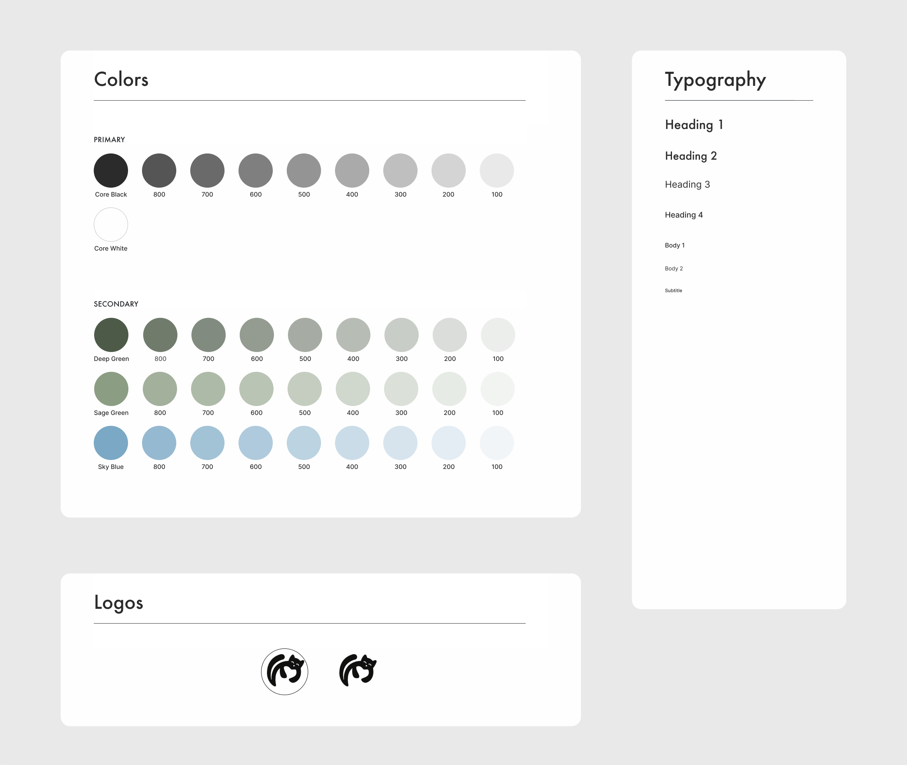
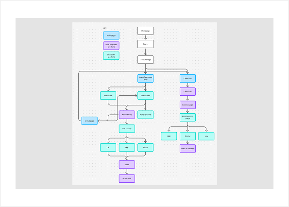
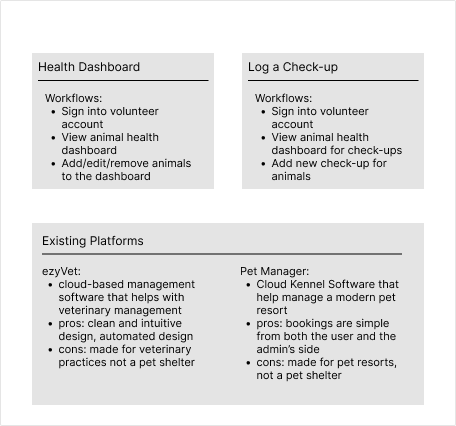
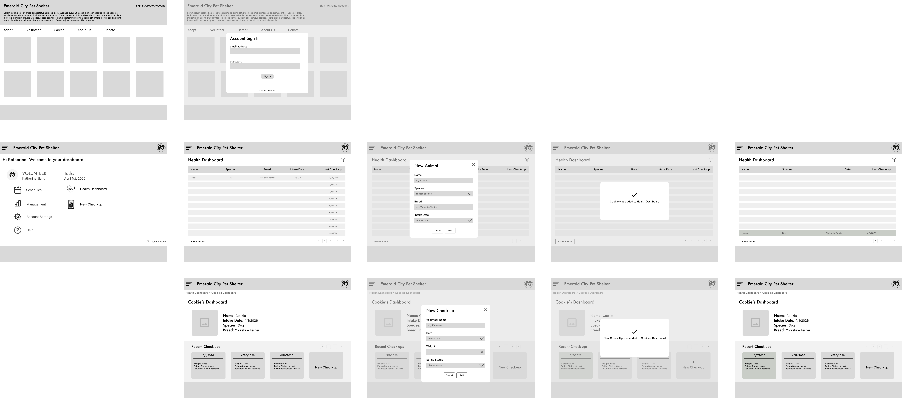
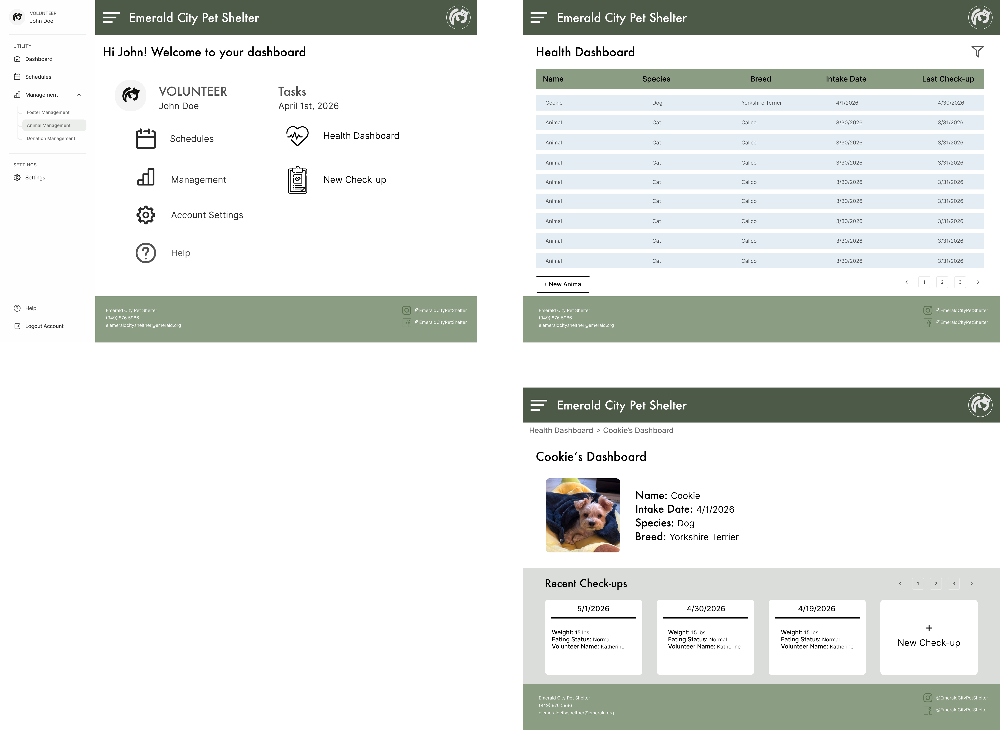

Close ✕
A desktop animal health dashboard for shelter volunteers to log daily observations, medical appointments, vaccinations, and behavioral notes — replacing paper forms for 30+ volunteers.
Role: Software Designer
Designed to digitize Emerald City Pet Shelter's animal tracking, improving accuracy, accessibility, and coordination among 30+ volunteers.
Branding uses Deep Green, Sage Green, and Sky Blue. Check-up tracking captures date, weight, appetite status, and volunteer name through a clean modal overlay.
View Prototype →Branding

Sitemap

Workflow Mapping

Low-Fidelity Wireframes

High-Fidelity Wireframes
